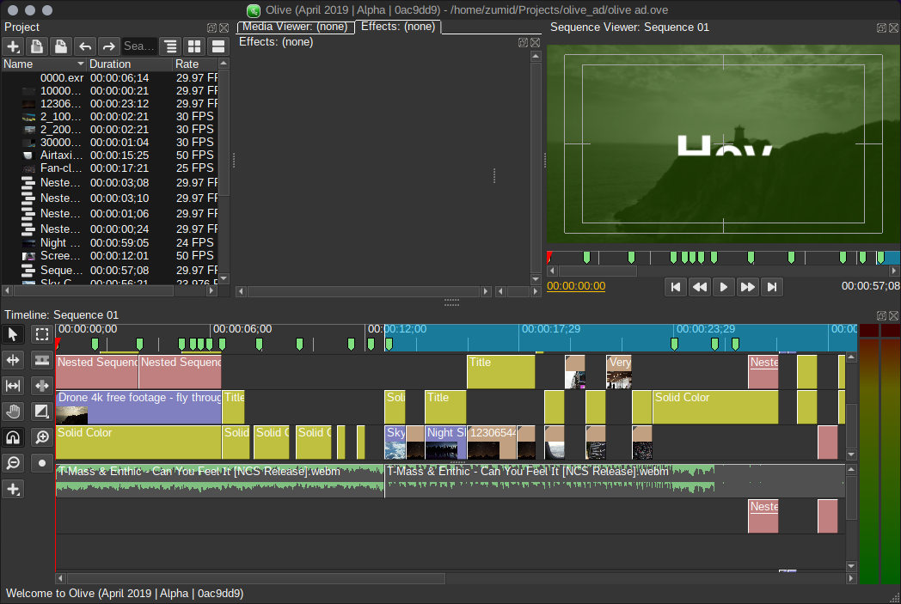

Olive Video Editor 0.2.0-prealpha
Olive welcomes you to the future of video editing.
What are you waiting for?
Olive welcomes you to the future of video editing.
What are you waiting for?
Olive is a video editor that aims to provide a fully-featured alternative to high-end, "professional" video editing software. It is a fast, modern, non-linear editing software that can be used for anything from cat videos to the big screen.
It is cross-platform, running on Windows, macOS and Linux, among other systems. It's free, libre and open-source, licensed under GPLv3. That means you're free to look at Olive's source code and improve it as you see fit.
Although it is both free as in freedom as well as free as in beer, you can help its development by becoming our Patron.
OCIO is a technology that allows you to work in a consistent, color-managed workflow, ensuring that what you do looks right anywhere.
Olive is OpenGL-powered, which can use your GPU to accelerate rendering by a TON! You don't need to see individual pixels or render at half-resolution anymore!
You can still make proxy clips if you need to, though! Just in case.

Because of the sheer speed of Olive's previewer, that means you can edit 4K and even 8K videos as fast as you can view them. Stack them, cut them, go crazy with them.
Olive's effects are written in the OpenGL Shading Language, which are already used in the web to create stunning effects. Now you can bring the magic to your videos as well.
The community has made a large number of effects that adds functionality to Olive, including, among other things, the ability to edit 360° video.

No more fussing with codecs! Olive will take care of your old videos through the versatile, built-in FFMPEG tools. Videos, pictures, image sequences... Anything.

If Olive's effects are toy blocks, then node graphs are the impressive structures you make from it.
With the Node Editor, you can create a more dynamic range of effects for your productions.
More new and exciting features will come to Olive. Stay tuned!
Even if Olive is missing something you need, come back in a while and it's possible it will have been implemented.
Olive is making rapid progress and users are already producing videos with it, but it's still currently in alpha meaning it is incomplete and not fully stable.
Regardless, we invite you to download the latest build and try it out for yourself!
Have fun, and enjoy experimenting in Olive!